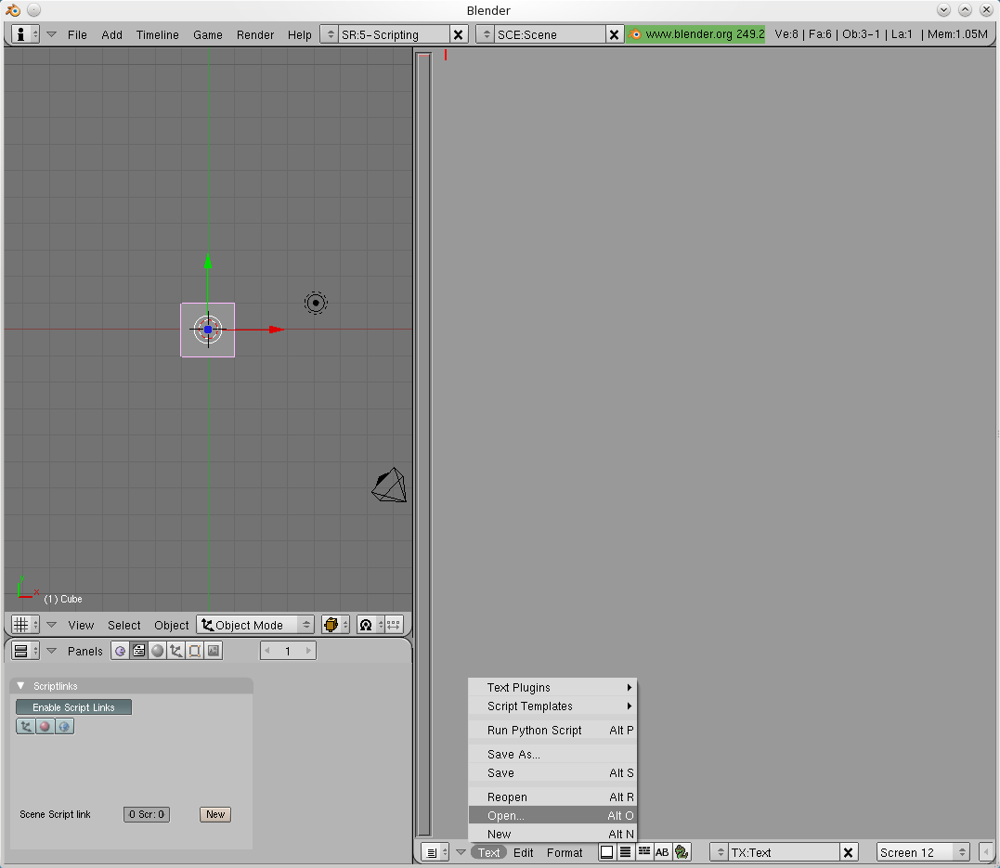
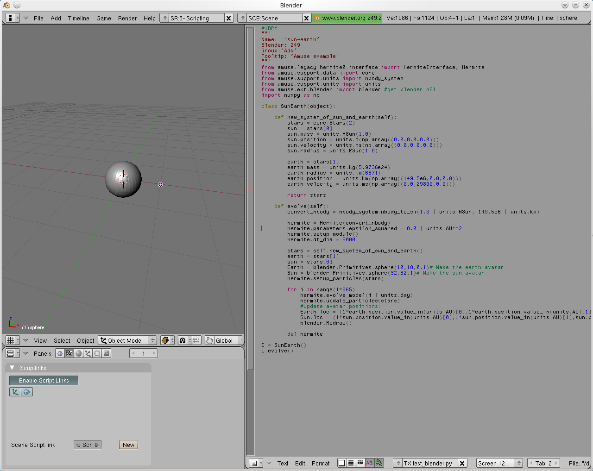

Using Blender for visualising Amuse results¶
{kind=link}
Blender¶
Blender is a free open source 3D content creation suite, GPL-ed. As it is specialised in visualisation of 3D content and scriptable in python it provides handy a tool for visualisation of Amuse data.
More information on Blender can be found on https://www.blender.org/
Starting Blender¶
We start blender from the command line, assuming all environment variables are set for amuse, and make sure mpd is running.
>>blender &
After blender opened we press CTRL-RIGHTCURSOR three times to open a text panel next to our 3D view. In the text panel we use the Text menu item to open a text file:
{kind=link}
This way we can retrieve scripts we had written before. Now, we are going to write a new script, but use our favourite editor, and once finished we will load the script using the method described above.
Note: By default, blender places a cube in the scene. You can delete it else it will obscure the sun in our example.
The script is based on the sun-earth test in Hermite. We start with that amuse script and add a couple of lines to communicate with blender, which are marked by comments in the example below.
Amuse blender API¶
To simplify communication with blender, amuse has the module amuse.ext.blender, which contains a very basic API. In our example we start with importing it on top of the regular stellar dynamics imports:
from amuse.ext.blender import blender
To create a sphere, e.g. the sun, with 32 segments, 32 rings and a radius of 1.0 in the current scene we type:
sun = blender.Primitives.sphere(segments = 32, rings = 32, radius = 1.0)
We can move and rotate our object using:
x,y,z = 1.0, 0.0, 0.0
alpha = 0.2
sun.loc = (x, y, z)
sun.rotZ = alpha
The Hermite Sun-Earth model with blender visualisation will become like this:
# 1BPY
"""
Name: 'sun-earth'
Blender: 249
Group:'Add'
Tooltip: 'Amuse example'
"""
from amuse.community.hermite.interface import Hermite
from amuse.units import nbody_system
from amuse.units import units
from amuse.ext.blender import blender # get blender API
import numpy as np
from amuse import datamodel
class SunEarth(object):
def new_system_of_sun_and_earth(self):
stars = datamodel.Stars(2)
sun = stars[0]
sun.mass = units.MSun(1.0)
sun.position = units.m(np.array((0.0, 0.0, 0.0)))
sun.velocity = units.ms(np.array((0.0, 0.0, 0.0)))
sun.radius = units.RSun(1.0)
earth = stars[1]
earth.mass = units.kg(5.9736e24)
earth.radius = units.km(6371)
earth.position = units.km(np.array((149.5e6, 0.0, 0.0)))
earth.velocity = units.ms(np.array((0.0, 29800, 0.0)))
return stars
def evolve_model(self):
convert_nbody = nbody_system.nbody_to_si(
1.0 | units.MSun, 149.5e6 | units.km)
hermite = Hermite(convert_nbody)
hermite.initialize_code()
hermite.parameters.epsilon_squared = 0.0 | units.AU**2
stars = self.new_system_of_sun_and_earth()
earth = stars[1]
sun = stars[0]
Earth = blender.Primitives.sphere(10, 10, 0.1) # Make the earth avatar
Sun = blender.Primitives.sphere(32, 32, 1) # Make the sun avatar
hermite.particles.add_particles(stars)
for i in range(1*365):
hermite.evolve_model(i | units.day)
hermite.particles.copy_values_of_all_attributes_to(stars)
# update avatar positions:
Earth.loc = (
1*earth.position.value_in(units.AU)[0],
1*earth.position.value_in(units.AU)[1],
earth.position.value_in(units.AU)[2])
Sun.loc = (
1*sun.position.value_in(units.AU)[0],
1*sun.position.value_in(units.AU)[1],
sun.position.value_in(units.AU)[2])
blender.Redraw()
hermite.print_refs()
hermite.stop()
if __name__ == '__main__':
system = SunEarth()
system.evolve_model()
The path to this example code is {amusedir}/trunk/examples/applications/test_blender.py
We save this file as myname.py, open it in blender and run it by typing ALT-P (cursor in editor):
{kind=link}